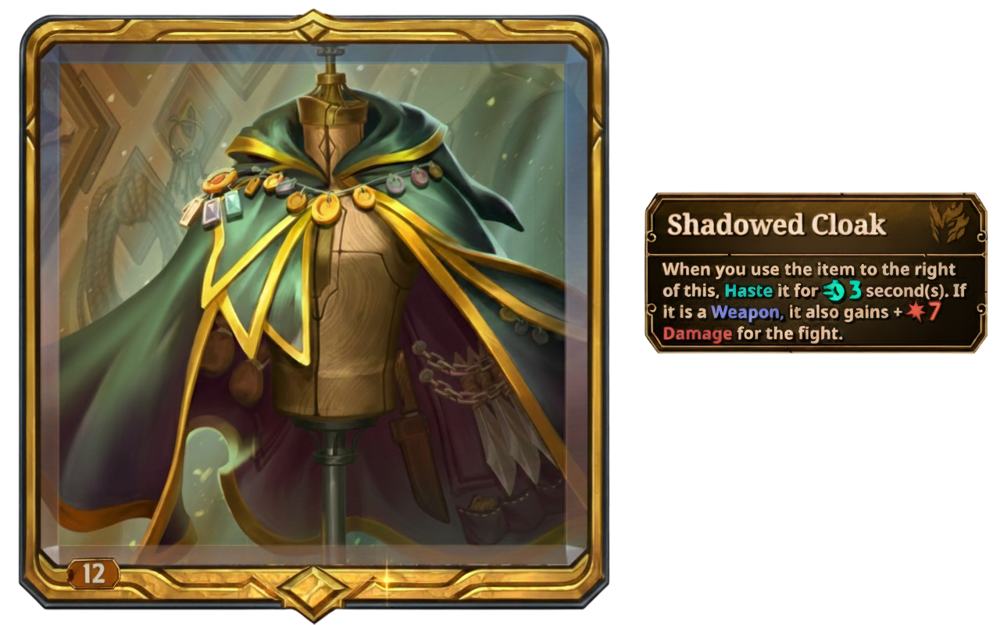
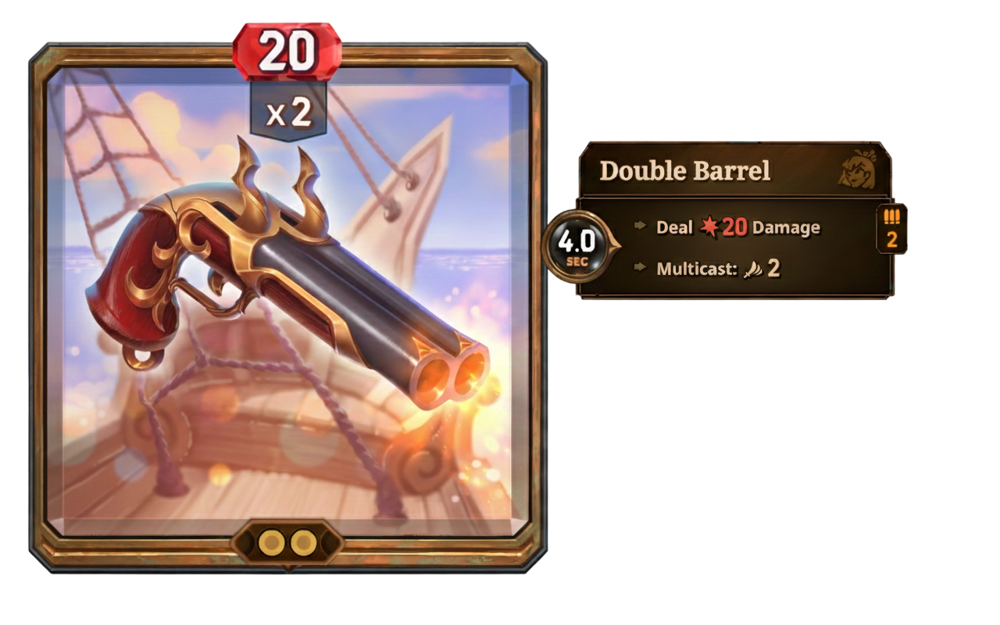

| 遊戲介紹 | |
|---|---|
| 玩法講解 | |
| 物品使用 | |
| 物品等級 | |
| 流程介紹 | |
| 傷害類型 | |
| 防禦類型 | |
| 時間變因 | |
| 其他效果 | |
| 職業特色 | |
| Vanessa | |
| Pygmalien | |
| Dooley | |
| Mak | |
| Stelle | |
| Jules |
The Bazaar是一款由Tempo開發的roguelike自走棋遊戲，玩家必須在"聲望"耗盡前贏得10場戰鬥。為了達成這個目的，玩家可以利用從商店裡購買、探索地點與事件、擊敗怪物所掉落的道具與技能來打造自己的戰力。
玩家在經歷一天的隨機事件後會贏來一場戰鬥，在"聲望"從20點歸零或贏得10場戰鬥結束遊戲，第一天戰敗會損失一點聲望，第二天戰敗會損失兩點，以此類推。

大致分為主動與被動物品，主動物品有充能條，充能滿會使用。被動物品沒有充能條，效果各異。
|  |
|---|
通常物品分成4個等級，青銅、白銀、黃金、鑽石。兩個通級的相同物品會進化成下一階(直接加入背包的不會觸發進化)，每種物品的起始等級不同。傳說物品只有一個等級。
一天分成6個時段，開始時會獲得收入，前兩個時段會遇到事件三選一，其中一個必為商店，中間會遇到一次野怪，野怪會掉經驗值，一定要慎選，沒打過很虧，打完野會再接兩個商店，最後與其他玩家戰鬥，結束一天的流程。
 |  |
|---|
damage(直接傷害)
就是傷害，打多少點對面扣多少血。
poison(毒傷害)
每秒結算一次，造成對手身上中毒點數的傷害，無視護甲。
burn(灼燒傷害)
每半秒結算一次，造成對手身上火點數的傷害，每次結算減少一點火。
heal(恢復)
回血，多少數值自己回多少血，並且減少回血量0.05倍的毒、火點數。
shield(護甲)
就是護頓，多少數值疊多少甲，疊甲沒有上限
regen(再生)
每秒結算一次，恢復自身再生點數的血量。
haste(加速)
被加速的物品充能速度變為2倍。
slow(減速)
被減速的物品充能速度變為0.5倍。
freeze(冰凍)
被冰凍的物品停止充能。
enchant(附魔)
為一個物品加入屬性，每件物品的附魔效果都不同，建議上how bazaar或bazaardb查詢。

transform(轉換)
將一個物品換成等級、大小、附魔的自身職業物品。如果沒有辦法，會轉成等級更高的。傳說物品不可轉換。
ammo(彈藥)
具有彈藥的物品表示存在使用上限，彈藥用完就不會在使用。可使用reload(填彈)恢復使用次數。
 |  |
|---|
(飛行)
中的物品被減速或冰凍的時間減半

lifesteal(吸血)
恢復等同於造成傷害的血量。
heat/chill(加熱/冷卻)
在盤面上隨機生成，專門給廚師配合的。


一名逃亡的海盜，心狠手辣，不計代價。有大量的彈藥類武器、各式船隻、水產相關物品。遊戲特色為啟動速度快、主要圍繞著加速與減速做啟動與干擾，也有用大量武器壓垮對手的玩法，有不少獲得額外經驗的事件，常可以靠等級壓制對手。恢復物品較少。

一位野心勃勃的企業家，他平時或許十分友好，但並不妨礙他主宰the bazaar。物品主要與經濟、地產、奢侈品相關。啟動不快，在戰鬥中依靠超高的數值取勝，可以用大量的金錢交換數值，在大後期經濟起飛後無人能敵。有較多回復與盾的物品方便防守，完全沒有毒物品

可愛的小機器人。有許多高科技物品與機械朋友、在一次時空旅行後結交了不少恐龍夥伴。在遊戲中可從8種核心選一種遊玩，每一種核心都各具特色。玩法注重運轉，物品之間互相配合格外重要，通常依賴技能補足數值。是較為全面的角色。

在the bazaar中探詢真理的煉金術師，有著豐富的神祕學與藝術知識。擁有許多藥水與實驗器材，喜歡收集各式神秘的古物。玩法主要圍繞轉換與附魔來抽出強大的物品，也可以通過解任務的方式解鎖古物影藏的效果。是用毒的高手，完全沒有盾物品。

一位天才技師，嚮往飛行，挑戰天空的極限。她發明了許多精密的器械、武器、飛行工具、載具與無人機，也有不少方便的小工具。玩法圍繞做配合，對各種干擾的抗性較好，有著最優秀的摧毀玩法，大型物品全部黃金起步，可嘗試在前期轉換出，明確方向。

the bazaar 中人竟皆知的名廚，永遠不會停止精進自己的廚藝。物品大多為美味的食物或廚具。擁有獨特的冰火位機制，很考驗玩家的擺位，有大量的盾與再生，主要靠疊火輸出，冰凍體系是目前最容易做到永凍的，也有廚具多武器流但不建議玩。完全沒有毒物品。